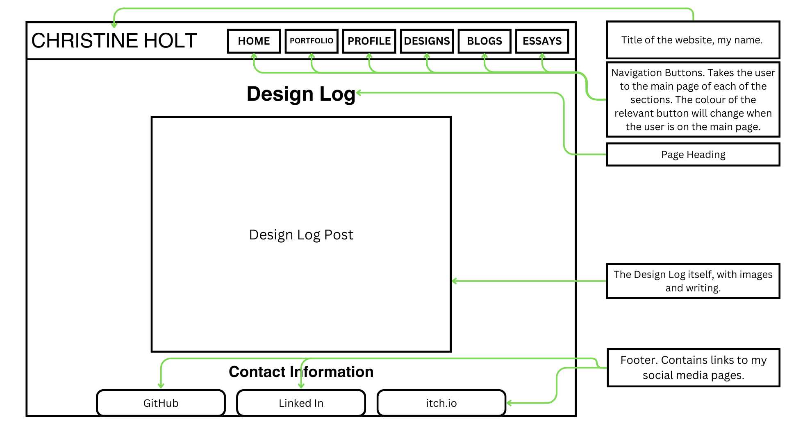

Overall things that have changed:
- Now when the user clicks on a navigation button and goes to that page, the colour of that button changes.
- Each page now has a footer.
- The blog post, design logs, portfolio items and essays all have a next, previous and back to menu buttons on the bottom.

Notes:
- For this one, not much has changed from the previous wireframe.
- The biographical info space has gotten a bit smaller (mostly because I could not think about much to say about myself).
- The arrow has moved to the side of the square, which was easier to implement spacing wise. It is thus a lighter colour because it is on a dark background.
Notes:
- For this, I made a bit more of a drastic change.
- Instead of just showcasing the portfolio items, I decided to showcase each of the most recent posts in each section.
- There is one for the blog posts, design logs, portfolio items and essays.
- This gives the user easier access to the most recent activity in every section.
Notes:
- For this I changed the layout a little. The rows are now showcased in fours instead of threes.
- They also now contain four game items and four writing items.
- Beneath this, there is the layout for the API I implemented, the random fact API (References to this in Design Log 7: Implementation documentation).
.png "Portfolio Game Item Colour Blockout.")
Notes:
- This has stayed the same, the two screenshots and the written part of the portfolio item. The only thing that has definitely changed is that the background of the written part is now white.
Notes:
- This is a new addition to the portfolio, the writing items. The layout is similar to the game items, it just does not have any screenshots.
Notes:
- This has stayed the same, barring the information on my inspirations, which is new.

Notes:
- Again, this has stayed the same.
Notes:
- The implementation of the list items only being in one square has stayed consistent.

Notes:
- This has stayed the same, the heading on top and the post in a white square. I find that this works, and I think that there is no need to fix the things that are not broken.
Notes:
- The implementation of the list items only being in one square has stayed consistent.
Notes:
- This has stayed the same, the heading on top and the post in a white square. I find that this works, and I think that there is no need to fix the things that are not broken.
Notes:
- The implementation of the list items only being in one square has stayed consistent.
Notes:
- This has stayed the same, the heading on top and the post in a white square. I find that this works, and I think that there is no need to fix the things that are not broken.